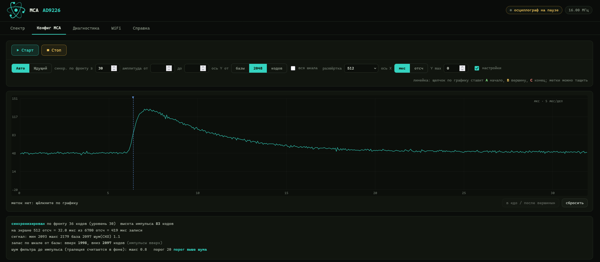

Спектр за 2 мин 11 с: 6705 имп/с, мёртвое время 1.1 %, 4096 каналов,
разрешение выделенного пика 6.88 %.
Что это
Прибор измеряет энергию гамма-квантов со сцинтилляционного детектора с ФЭУ и строит
спектр. Импульс с усилителя идёт прямо на 12-битный АЦП AD9226, поток забирает
аппаратура ESP32-S3 (камерный интерфейс LCD_CAM и DMA), а обработку ведёт второе ядро.
Звуковая карта для оцифровки не нужна: счёт до десятков тысяч импульсов в секунду.
Возможности
Оцифровка 1–20 МГц, 12 бит, непрерывный поток без пропусков.
Трапецеидальный фильтр (алгоритм Джорданова–Нолла) на векторных командах ESP32-S3,
отбраковка наложений, мёртвое время.
Спектр 2048/4096/8192 канала, анализ пика: центр, ширина на полувысоте, разрешение.
Выгрузка спектра: XML (открывается в BecqMoni), CSV, N42 (ANSI N42.42), SPE (SpectraLine).
Осциллограф с синхронизацией по фронту и по амплитуде, развёртка до 32768 отсчётов,
кадры по WebSocket со сжатием без потерь.
Мониторинг CPS: история 6 часов, график с усреднением и скользящим средним, выгрузка CSV.
Эмуляция MCA на COM-порту по протоколу shproto — прибор виден программам вроде BecqMoni.
Сеть: WiFi или Ethernet (модуль WIZnet W5500), время по SNTP.
Веб-интерфейс на русском и английском, без установки программ.
Из чего собрано
Часть
Что это
ESP32-S3-N16R8
модуль с 16 МБ флеш и 8 МБ PSRAM
AD9226
готовая плата 12-битного АЦП до 65 МГц
Детектор
сцинтиллятор NaI(Tl) с ФЭУ и усилителем
Необязательно
модуль Ethernet WIZnet W5500
Плата не разводится и мелкие SMD-детали паять не нужно: всё собирается проводами из
готовых модулей.

Осциллограф прибора: одиночный импульс высотой 83 кода, шум базы 1.1 кода.
Что внутри прошивки
Захват: LCD_CAM в камерном режиме плюс GDMA, кольцо буферов во внутренней памяти.
Разбор найденных при отладке причин: помехи от гармоник CLK в полосе WiFi, выбор
пары «частота АЦП + канал роутера», буфер отправки TCP, потери чанков.
Модели обработки на Python и тесты: tools/test_dsp.py.